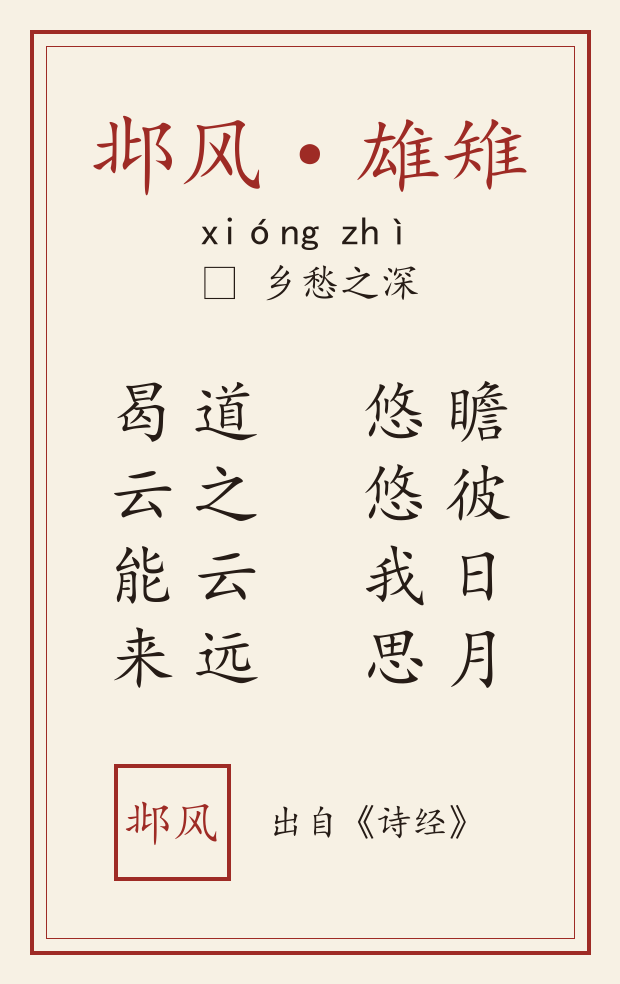

<div style="max-width:680px;margin:0 auto;background:#f7f1e3;padding:30px 22px 40px;font-family:'Songti SC','SimSun',STSong,serif;color:#3a2c20;line-height:1.95;">

  <div style="font-size:13px;color:#8a6d3b;letter-spacing:6px;text-align:center;">詩 經 · 邶 風</div>
  <h1 style="font-size:34px;color:#9e2b25;text-align:center;letter-spacing:8px;font-weight:normal;margin:8px 0 4px;">雄雉</h1>
  <div style="font-size:14px;color:#6b5638;text-align:center;letter-spacing:2px;">xióng zhì　·　乡愁之深</div>
  <div style="text-align:center;margin:14px 0 6px;">
    <span style="display:inline-block;font-size:13px;color:#fff;background:#9e2b25;padding:3px 14px;border-radius:2px;letter-spacing:2px;">瞻彼日月 · 思归难返</span>
  </div>

  <div style="text-align:center;color:#c9a25a;letter-spacing:10px;margin:20px 0;">❦　❦　❦</div>

  <div style="font-size:16px;color:#4a3826;text-align:center;">原文 · 竖排（手机长按可保存）</div>
  
  <div style="font-size:13px;color:#8a6d3b;text-align:center;">（横屏或双指放大，可见笔意）</div>

  <div style="text-align:center;color:#c9a25a;letter-spacing:10px;margin:22px 0 14px;">❦　❦　❦</div>

  <h2 style="font-size:18px;color:#9e2b25;border-left:4px solid #c9a25a;padding-left:10px;margin:20px 0 10px;">译 文</h2>
  <p style="font-size:16px;color:#4a3826;margin:6px 0;text-indent:2em;">看看那日月，思念更悠长。路途太遥远，哪能回故乡？</p>

  <h2 style="font-size:18px;color:#9e2b25;border-left:4px solid #c9a25a;padding-left:10px;margin:22px 0 10px;">注 释</h2>
  <p style="font-size:15px;color:#4a3826;margin:4px 0;">瞻（zhān）：看、望。</p><p style="font-size:15px;color:#4a3826;margin:4px 0;">曷（hé）：何、怎么。</p>

  <h2 style="font-size:18px;color:#9e2b25;border-left:4px solid #c9a25a;padding-left:10px;margin:22px 0 10px;">赏 析</h2>
  <p style="font-size:16px;color:#4a3826;margin:6px 0;text-indent:2em;">仰望日月而思归，道路遥远而难返。以极简之笔写极深之乡愁，情致悠远。</p>

  <div style="text-align:center;color:#c9a25a;letter-spacing:10px;margin:24px 0 14px;">❦　❦　❦</div>
<div style="text-align:center;font-size:14px;color:#6b5638;margin-top:10px;"><span style="display:inline-block;font-size:20px;color:#9e2b25;border:2px solid #9e2b25;padding:6px 10px;letter-spacing:2px;">邶風</span><div style="margin-top:10px;">《诗经·邶风》十九篇 · 系列连载</div><div style="margin-top:4px;color:#8a6d3b;">下期预告：匏有苦叶 ——「招招舟子人涉卬否」</div></div>
</div>
